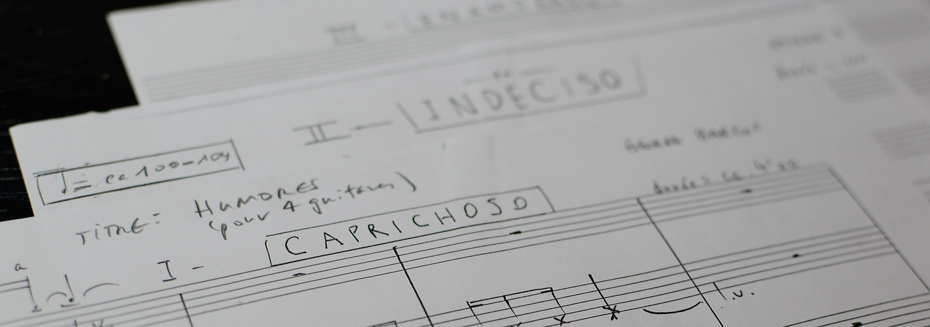
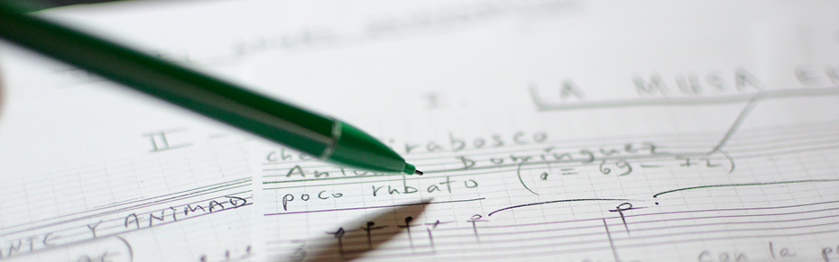
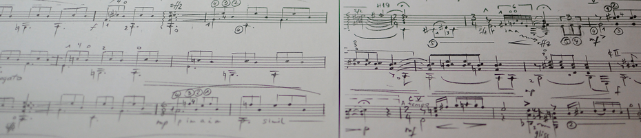

Composition featured: Humores

HUMORES (for 4 guitars) in 3 movements, written in 2002 for the Quartetto Torres from Lugano. Numerous concerts in Switzerland and Italy, including the Festival chitarristico di Torino. Duration: about 10 minutes.
Composition featured: Sueños y Ensueños

SUEÑOS Y ENSUEÑOS (for pan flute and guitar) in 4 movements,commissioned by the master pan flute player Michel Tirabosco and guitarist Antonio Dominguez. First performance in Geneva,Switzerland. Many performances in concert halls and churches in Switzerland, France and Italy. Duration: about 9 minutes.
Composition featured: Canciones Tropicales

CANCIONES TROPICALES (for solo guitar) in 5 movements, written for concert guitarist Georgui Vassilev. First performance at M.I.S.S. Art Gallery in Geneva, Switzerland and numerous performances in Bulgaria, Switzerland, Denmark and Germany. Duration: about 12 minutes.
George et Daisy , années 80
NDR's Big Band, ( Radio Hambourg)
Trio for Oboe, Clarinet and Bassoon (1980)
Preludio - Balada - Finale.
Duration: 4' 30"
Manuscript
Order at georgebarcos@yahoo.com
Suite para Quinteto (1986)
for wind quintet
Preludio - Canción - Danza.
Duration: 5' 30"
Editions BIM
Four Songs for String Trio and Piano (1988)
Duration: 8' 00"
Order at georgebarcos@yahoo.com
Quatre pièces pour deux guitares (1989)
Tongolete - Canción de Mediodía - Rumba de la Brujas - Tierra Virgen.
Duration: 5' 00"
Müller & Schade AG
Homenaje a la Selva (1989)
for flute, clarinet, violoncello and vibraphone
Diálogo de las flores - Danza de las abejas - Resurección de los árboles.
Duration: 7' 30"
Order at georgebarcos@yahoo.com
Danzas del Caribe (1990)
for three clarinets, bass clarinet and piano
Molto animato - Moderato con brio - Andante con ánima.
Duration: 7' 00"
Order at georgebarcos@yahoo.com
Trois Préludes pour Tuba et Piano (1990)
Duration: 5' 30"
Editions Marc Reift
El Circulo de la Nostalgia (1990)
for two guitars
La Ciudad sin ti - Recuerdos de la Sierra - Conferencia de los Enamorados.
Duration: 5' 00"
Order at georgebarcos@yahoo.com
Canciones Tropicales (1991)
for guitar solo
Preludio Azul - Canción Amarga - Bambuco Negro - El Jardín Encantado - La Ciudad de los Milagros.
Duration: 11' 00"
Order at georgebarcos@yahoo.com
Nine Progressive Pieces for Clarinet Trio (1991)
for three clarinets
Duration: 10' 00"
Müller & Schade AG
Some selected RECORDINGS OF GEORGE'S WORKS
Danzas Costeñas, pour flûte, clarinette et piano, joué par le Sterling Trio, www.the sterlingtrio.com
Humores, pour 4 guitares, joué par le Quartetto Torres
WORKS OF GEORGE BARCOS
Trombone Quartet (1991)
for four trombones
Con moto - Poco andante - Moderato molto ritmico - Tumbao Cubano.
Duration: 7' 00"
Müller & Schade AG
Poemas Encantados (1992)
for four harps
1. El guajiro y la serpiente 2. Luces del trópico 3. La isla del olvido 4. El papagayo adivino
Duration: 12' 00"
Order at georgebarcos@yahoo.com
Sueños y Ensueños (1993)
for pan flute and guitar
La Musa Enamorada - El Sueño de la Iguana - El Ángel Desaparecido - Rumbero y Soñador.
Duration: 9' 00"
Manuscript
Order at georgebarcos@yahoo.com
Deux Pièces pour quatuor de trombones (1993)
1. Chorongo 2. Canción
Duration: 4' 00"
Order at georgebarcos@yahoo.com
El Libro de los Colores (1994)
for pan flute, violin, violoncello and harp
Duration: 5' 00"
Manuscript
Order at georgebarcos@yahoo.com
Danzas Costeñas (1995)
for flute, clarinet and guitar (or piano)
Chango - Desierto - Buenaventura.
Duration: 6' 00"
Emerson Edition Ltd.
Cinco Piezas Recreativas (1996)
for flute, violin, clarinet and piano
Danza Idilica - Ikebana - Caja de recuerdos - Nieve - El Ángel de la Guardia.
Duration: 12' 30"
Order at georgebarcos@yahoo.com
Cuentos Peregrinos (1997)
for guitar and double-bass
La Ciudad perdida - Burundanga - Raices.
Duration: 10' 00"
Order at georgebarcos@yahoo.com
3 Pieces (1997-1998)
for
oboe and bassoon assemble
"Calypso" for 3 oboes and 3
bassoons
"Xote mixte" for 4 oboes and 4 bassoons
"El sueño
del guácharo" for 3 oboes and 3 bassoons
Duration: 8' 00"
Manuscript
Order at georgebarcos@yahoo.com
Poemas de Esperanza (1998-1999)
for female choir, two guitars and double-bass
Texts: Juana de Ibarbourou, Gabriela Mistral, Delmira Agustini
La nueva esperanza - Hímno al árbol - Explosión.
Duration: 12' 30"
Order at georgebarcos@yahoo.com
Quatre pièces pour 2 guitares, by D. Bogdanovich and S. Wayne
Sueños y Ensueños, for pan flute and guitar, by M. Tirabosco and A. Dominguez.
Piezas Íntimas (1999)
for
flute, bassoon and harp
Nocturnal - Danzón - Poema Místico.
Duration:
9' 30"
Order at georgebarcos@yahoo.com
Humores (2001-2002)
for four guitars
Caprichoso - Indeciso - Enamorado.
Duration: 12' 00"
Order at georgebarcos@yahoo.com
Danzas idílicas (2003)
for 3 oboes, 2 bassoons and percussion
Duration: 8' 00"
Manuscript
Bochorno (2004)
for voice, violin, bandoneon, piano and double bass
Duration: 5' 00"
Order at georgebarcos@yahoo.com
4 Pièces (2005)
for mixed voices (SATB), piano, violoncello and bassoon
Texts: Antoine de Saint Exupéry, Alfonsina Storni, Beaucarné, Théophile Gautier
Passarelles dans a nuit - Maisons alignées - Une triste boutique - Les batôns.
Duration: 10' 00"
Order at georgebarcos@yahoo.com
Hymne au soleil (2006)
for mixed choir, piano and percussion (2)
Texts: Edmond Rostand
Duration: 12' 00"
Order at georgebarcos@yahoo.com
Cita para ocho (2007)
for 4 flutes, 2 alto flutes, 2 bass flutes
Duration: 8' 00"
Order at georgebarcos@yahoo.com
Incertidumbre (2012)
for flute, clarinet and piano.
Duration: 7' 00"
Manuscript
Order at georgebarcos@yahoo.com
REFLECTIONS (2015 - 2016)
Four sonnets and a round.
For mixed choir (SATB) and piano
Text: Karen Sadek
Order at georgebarcos@yahoo.com
Homenaje a García Marquez (2016-17)
for chamber orchestra
Order at georgebarcos@yahoo.com